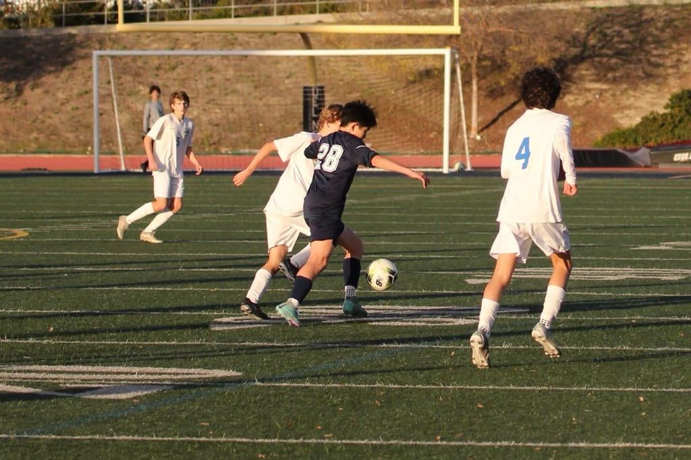

Even before I tore my meniscus, I had performance anxiety before games, even training sessions, with my club soccer team. That feeling of messing up in front of individuals that expect the best out of you, looking like you aren't a part of the team, and having this snowball into the next practice or game is a pit of darkness that I felt like I would never be able to get out of. The snowball effect is real: messing up that one cone drill, failing a simple pass to a teammate, missing an open shot. These mistakes that seem small in the grand scheme of things look like raging beasts in the moment of the mistake. You feel like your world has completely toppled on itself, you feel embarrassed, ashamed, and worst of all, you start to doubt yourself. You start to doubt your capabilities and the myriad of hours spent training. You start to question whether those hours spent outside of club practices individually were worth it. You start questioning the innumerable reps of cone drills, miles of running, and hundreds of shots on target at the goal. Everything that had motivated and prepared you for that moment, you feel like the work all went to waste.
I was in that situation a few years back, and that feeling was only intensified by my meniscus injury. However, after a long time of battling performance anxiety, I finally found peace with it and found a way to combat it. The anxiety you feel before a game disappears once you set a good tone in the game. A successful pass or dribble makes you forget about the doubts you had about yourself.
I once thought of soccer as a coin flip. Heads meant feeling confident, rhythm in the game, and being in the flow. Tails meant feeling like I never touched a soccer ball in my life. This feeling would continue until I either make a fantastic play and get my confidence back or make a silly mistake and begin to doubt my own abilities. I treated soccer as either the fantastic experience I had always grown up with or something I had to endure for 90 minutes.
However, after I stopped thinking of soccer as a coin flip, my anxiety diminished. I felt excited to step on the field, and I felt excited to play soccer, a luxury that was once only reserved for when I was in a good groove on the field. What changed my mindset, what changed my idea of soccer being a coin flip, was remembering the countless hours I poured into the sport and the real reason I started kicking the soccer ball in the first place. I loved soccer, and I shouldn't dread it, no matter how horrible I might think I played one day.
For me, the injury went both ways. Coming out of injury, I was itching to play soccer once again; however, I also felt scared of the chance of reinjuring myself. What if my meniscus is torn again, or worse: what if some other ligament is torn that takes me out of the game indefinitely? These thoughts always plagued my mind and turned soccer into a bittersweet experience. On one hand, I was excited to finally get back to the game I loved, and on the other hand, I felt doubt about whether I could be the player I once was and if I could push myself as hard as I did before.
However, I learned how to combat these feelings by reading the stories of many soccer players who have had horrible injuries but have come back stronger and fitter. One of my inspirations is Neymar Jr., a player who danced and performed magic on the field. In his soccer career, Neymar was always very susceptible to injury, and it was something that he always had to deal with whenever he played.
However, watching his games at Barcelona from 2013 to 2017, I noticed something that changed my perspective on performance. When Neymar came onto the pitch, he didn't step onto it feeling anxious, but he looked grateful, happy that he could play one more day of soccer than before. He didn't think about his performance, his injury, or whether or not he could run and compete against the biggest, baddest players in La Liga. He stepped on the field, just like he did decades ago, and had fun and entertained the crowd.
Any sport in the world was created for enjoyment, and I believe any athlete who might be struggling with performance, feeling doubtful of their abilities, starts their journey because they love what they do. They loved the feeling they got when they competed, when they performed, and when all that mattered was the ball. That feeling of your problems melting away when you stepped on the field, when you felt confident in yourself, was something that is irreplaceable and something I will remember for the rest of my life.
Whenever I feel doubt or anxiety about my performance before a practice or before a game, I sit down and think about my journey, how far I have come, and how much I love this sport. I remember those recreational games when I was small, and I remember the hunger I had when I was injured, dreaming of the chance to get back on the field. Most importantly, I remember the kid at the 2018 World Cup stadium, falling in love with the sport, and staring at the field with excitement. I remember why I started this journey in the first place.
Support
Resources & Support
If this story resonated with you or reflects challenges you may be experiencing, the following organizations provide support and helpful resources.
Broad Shoulders Initiative is not a crisis service, medical provider, or therapy provider. If support feels urgent, please contact emergency services, a trusted adult, a school counselor, or a licensed professional.